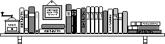

Readings

The course does not require a text book. Students are expected to take notes, a useful skill for professionals.
Each homework assignment will come with an optional set of notes.
Programming language enthusiasts may wish to pursue their own studies with books that offer an alternative, traditional perspective on the topic. What follows is a non-exhaustive list of suggestions.
Interpreter-oriented Books
Friedman & Wand, Essentials of Programming Languages (EoPL)
Krishnamurthi, Programming Languages: Applications and Implementations (PLAI)
Both books target undergraduate courses. They have dominated the teaching of PL courses (at research universities) at this level for three decades. The first book is the brainchild of my advisor; the second one is due to one of my former PhD students, now a professor at Brown. (My lectures at Rice created the bridge between them.)
Type-oriented Books
Pierce, Types and Programming Languages (TaPL)
Girard, Types and Proofs
The first book targets advanced undergraduates, the second one is a graduate text.
A Model-oriented Book
Felleisen, Findler, Flatt, Semantics Engineering (parts I, II)
The book derives abstract machines from the system of calculations students get to know in K-12, including a variant of the CESK machine. I have used this text book for the PhD-level course at Northeastern.
Northwestern offers a similar (exponentially growing) course at the senior level.